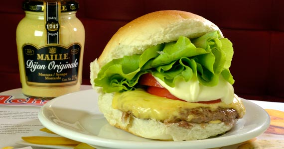
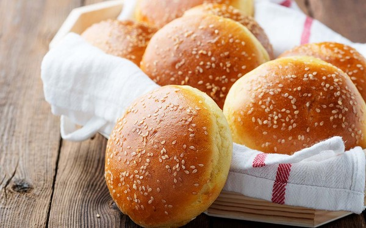

O Brutus Burger nasceu da paixão por hambúrgueres artesanais e da vontade de oferecer ao cliente algo além de um simples pedido online; uma experiência completa de personalização e sabor.
Inspirado nas grandes franquias de hamburguerias premium que dominam o cenário gastronômico nacional, o Brutus Burger foi criado com o objetivo de reunir o que há de melhor no mercado: a qualidade dos ingredientes, a sofisticação da interface digital e o cuidado com cada detalhe da experiência do cliente.
Diferente de um simples site de delivery, o Brutus Burger propõe um modelo interativo em que o próprio cliente é o chef da sua refeição. Por meio de uma interface intuitiva e visualmente atraente, o usuário pode montar o seu próprio hambúrguer, escolhendo pão, proteína, molhos, acompanhamentos e adicionais de acordo com o seu gosto pessoal.
O projeto Brutus Burger é desenvolvido como parte do Trabalho de Conclusão de Curso (TCC) do Curso Técnico em Informática do Colégio Flama (K2), em Duque de Caxias, e representa a aplicação prática dos conhecimentos adquiridos ao longo do curso nas áreas de desenvolvimento web e linguagem de programação.
— Chef João Guilherme

O segredo do melhor hambúrguer da empresa Brutus Burguer começa na escolha dos ingredientes. Cada item é selecionado com cuidado para garantir sabor, qualidade e frescor em cada lanche servido. Desde o pão até os acompanhamentos, tudo é preparado para oferecer uma experiência única aos clientes.
O pão utilizado nos hambúrgueres é sempre fresco e macio, trazendo equilíbrio para todos os sabores do lanche. Levemente dourado na chapa, ele ajuda a deixar o hambúrguer ainda mais saboroso e com uma textura especial. Esse detalhe faz toda a diferença na experiência do cliente.
A carne é um dos grandes diferenciais da Brutus Burguer. Preparada artesanalmente, ela possui um tempero especial e um ponto de preparo que mantém a suculência e o sabor marcante. Esse cuidado faz com que cada hambúrguer tenha uma textura macia e irresistível.
Além da qualidade da carne, o processo de preparo também recebe muita atenção. Cada hambúrguer é preparado no momento do pedido, garantindo mais frescor e sabor. O aroma da carne na chapa torna a experiência ainda mais marcante e apetitosa.
Outro segredo está na combinação dos ingredientes. Os molhos especiais, os queijos selecionados e os vegetais frescos criam um equilíbrio perfeito de sabores. Cada detalhe é pensado para deixar o hambúrguer mais completo, saboroso e apetitoso.
As saladas e acompanhamentos também fazem parte da qualidade da Brutus Burguer. Ingredientes frescos e bem preparados deixam o lanche mais leve, colorido e saboroso. Tudo é organizado para oferecer uma refeição completa e agradável.
O ambiente da empresa também contribui para a experiência dos clientes. A Brutus Burguer busca oferecer um espaço confortável, acolhedor e ideal para reunir amigos e família. Isso faz com que cada visita seja ainda mais especial.
Além da qualidade dos produtos, a Brutus Burguer valoriza o atendimento e a dedicação em cada pedido. O objetivo da empresa é proporcionar momentos especiais para os clientes, unindo sabor, qualidade e paixão pela gastronomia em cada hambúrguer preparado.

A salada de uma hamburgueria vai muito além de um simples acompanhamento. Feita com ingredientes frescos, como alface crocante, tomate suculento, cebola roxa e molhos especiais, ela traz equilíbrio e sabor para a refeição. Além de deixar o prato mais leve e colorido, a salada combina perfeitamente com hambúrgueres artesanais, oferecendo uma experiência mais completa e saborosa para os clientes.

O pão é uma das partes mais importantes de um hambúrguer, pois é ele que envolve todos os ingredientes e ajuda a destacar os sabores. Em uma boa hamburgueria, o pão costuma ser macio, fresco e levemente dourado na chapa, garantindo textura e sabor na medida certa. Seja brioche, australiano ou tradicional, ele faz toda a diferença na experiência do cliente, trazendo equilíbrio entre a carne, os molhos e os acompanhamentos.

A carne é o principal ingrediente de um hambúrguer e faz toda a diferença no sabor. Preparada com qualidade e no ponto certo, ela fica suculenta, macia e muito saborosa. Em uma hamburgueria, a carne combina perfeitamente com o pão, os molhos e os acompanhamentos, tornando a experiência do cliente ainda mais especial. além disso, Cada detalhe no preparo ajuda a garantir uma refeição saborosa e de qualidade.